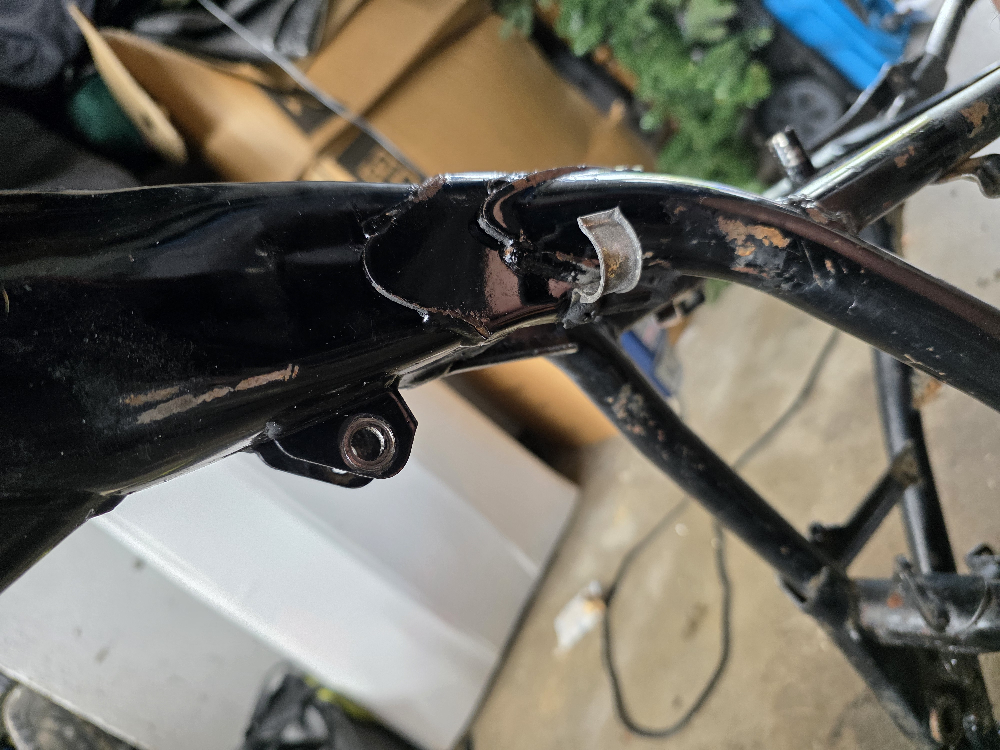
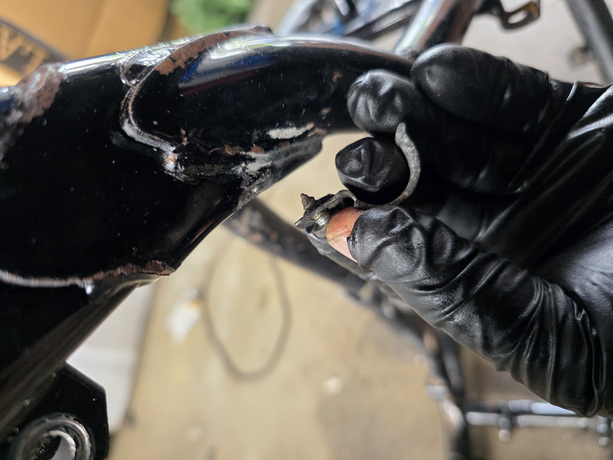
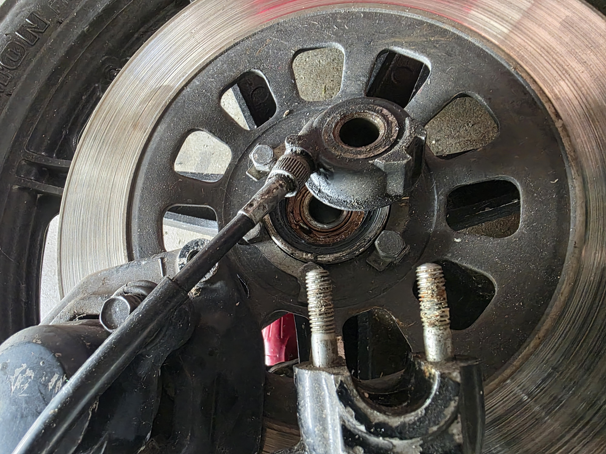
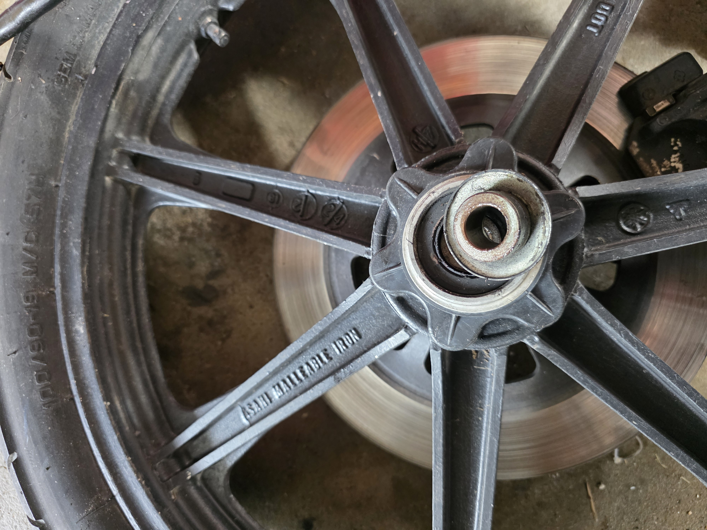

🏗️ Ramma klar — forstillingen demontert
Nok en milepæl 🎉 Ramma og svingarmen har fått en siste gjennomgang — rengjort og klargjort for lakk. Planen er å sende alt til Oslopulverlakk i Rælingen i uke 24.

Jeg har skrudd oljefilteret på plass i oljetanken for å hindre at sand og støv fra sandblåsingen kommer inn i tanken. Må snakke med Oslopulverlakk om hvordan de vil ha resten maskert — de har garantert gode rutiner for det.

Forstillingen
Forstillingen er helt demontert. Gaffelrørene er sjekket og ser greie ut — ingen skader på kromflaten. Gaffelbeina derimot er ganske frynsete og trenger oppfriskning. Jeg vurderer å pusse dem ned og lakkere selv, men det kan også gå til pulverlakk sammen med ramma. Bestemmer meg senere.

Frontskjermen er helt kjørt, så den må erstattes med ny. Har ikke gått skikkelig gjennom kaliper og bremseskive enda — det kommer senere.

✅ Gjort siden sist
- Siste rengjøring av ramme og svingarm ✅
- Oljefilter skrudd på plass for å beskytte oljetanken ✅
- Forstillingen fullstendig demontert ✅
- Gaffelrør sjekket — krom ok ✅
- Avtale om ramme til Oslopulverlakk i uke 24
Her er et siste bilde av ramma — snart får den ny, lekker drakt!

🔜 Neste steg
- Uke 24: Levere ramme + svingarm til pulverlakkering hos Oslopulverlakk
- Gaffelbein: Pusse ned og lakkere, eller sende med til pulverlakk
- Ny frontskjerm: Må finnes — Yambits, KEDO eller OEM?
- Gjennomgang av bremser (kaliper + skive)
- Planlegge motoroverhaling
Fremdriften er god. Når ramma kommer tilbake fra lakk, begynner moroa med å bygge opp igjen! 🔧🏍️